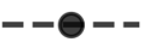

Quantifying The Impact Of Completion Delay Since Drilled On Production
Category > Oil and Gas
Mar 03, 2023Once a well is drilled, it must be completed to produce oil and gas. However, operators sometimes delay completing a well for various reasons, such as waiting for fracking crews or facing budget constraints. These delayed wells, known as Drilled but Uncompleted (DUC) wells, are considered to be a working oil field capital because the wells can be turned on line for production for cheap. However, the empirical evidences suggests that the DUC wells may no longer function as a working capital if completion is delayed for too long. The probability of completion falls drastically after two years of delay in completion, and DUC wells that still remain un-completed beyond this time frame are likely to be never completed.
The study conducted in this article is built on top of the previous scientific findings which claim that the nearby parent wells can have a negative impact on the production of child wells, which worsens the longer the parent wells have been producing. This is particularly critical for DUC wells, as the wells awaiting completion are already exposed to these pressure variations from existing wells that continue to produce and deplete. This study aims to quantify the impact of increasing delays in completion on production by observing changes in estimated ultimate recovery (EUR) normalized by lateral length and completion concentration per perforated foot as a function of DUC time.
Contents
- 0.Sample data description
- 1.Key takeaways
- 2.Quick overview on DUC wells
- 3.Reservoir depletion due to existing offset wells
- 4.Quantifying the impact of DUC time on EUR
- 4.1.Preliminary data cleaning
- 4.2.Raw EUR vs. DUC time
- 4.3.Factors that affect EUR: Completion size and lateral length
- 4.4.Normalized EUR vs. DUC time
- 5."Dead" DUC wells
- 6.Conclusion
0. Sample data description¶
The main data source used for this article is the Enverus Drilling Info application. Within Drilling Info's data base, I selected wells in the seven major basins in the US, defined by the US Energy Information Adminitration's (EIA) Drilling Productivity Report (DPR): Anadarko, Appalachia, Bakken, Eagle Ford, Haynesville, Niobrara, and Permian.
Figure 1: 7 major basins in the US, Source: EIA
The DPR provides which county and state they used to define each major basins. For your convenience, I compiled a text file (Basins_Boundaries.txt) that has the list of state and counties that can be easily pasted into Drilling Info's filter tab. Unfortunately Enverus Drilling Info is a commerical software and not everyone will be able to use it.
Figure 2: Pasting the Eagle Ford basin's state and county data into Drilling Info for query
Pulling all active wells in the specified counties and states gives this Excel file (EUR_vs_Lag.xlsx). The file has 7 tabs for each basin. The below code output shows small portion of the Anadarko wells data. Each row represents a record of one well.
import pandas as pd
pd.read_excel('https://aegis4048.github.io/downloads/notebooks/sample_data/EUR_vs_Lag.xlsx', sheet_name='Anadarko').head(5)
1. Key takeaways¶
2. Quick overview on DUC wells¶
Once a well is drilled, it must be completed to produce oil and gas. However, operators sometimes delay completing a well for various reasons, such as waiting for fracking crews or facing budget constraints. These delayed wells, known as Drilled but Uncompleted (DUC) wells, accumulate when drilling outpaces completion and decrease when the opposite occurs. Figure 3 illustrates the historical trend of DUC inventories in the seven major US basins, as defined by the EIA's DPR page. Figure 4 provides more detailed information on each basin, including hydrocarbon production volumes and drilling activities.
DUC wells have unique features that make them an attractive option for low-cost production. The wells can be turned on line for production for cheap; the costs of drilling have been paid, and completion won't be as costly as new drilling. They can function as a secondary form of hydrocarbon storage underground, unlike traditional above-ground facilities. In times of low oil prices, operators may choose to complete them later, hoping that the oil price would recover in a near future. Throughout the rest of the article, however, I show why this may not be a smart idea for some basins (especially Anadarko and Permian) due to reservoir depletion induced by existing producing offset wells.

Figure 3: DUCs accumulate when drilling activity exceeds completion, and vice versa. The line plots depict three distinct periods of significant fluctuations in DUC well inventories, with [1] and [3] representing instances of rapid depletion due to high completion rates, and [2] reflecting a period of accumulation resulting from high drilling activities. WTI Crude oil prices is appended at the bottom to show the effect of commodity prices on DUCs.
Source Code For Figure (3)
import pandas as pd
import matplotlib.pyplot as plt
import numpy as np
import matplotlib.ticker as ticker
############################################# Basins ##############################################
basins = sorted(['Anadarko', 'Appalachia', 'Eagle Ford', 'Haynesville', 'Niobrara', 'Permian', 'Bakken'])
################################### DUC Wells Count per Basin #####################################
# compile a DataFrame to store count of DUC wells per basin
# source: EIA - https://www.eia.gov/petroleum/drilling/
dfs = []
for basin in basins:
df_cur = pd.read_excel('https://aegis4048.github.io/downloads/notebooks/sample_data/Duc-EIA.xlsx', sheet_name=basin)
df_cur['Basin'] = basin
dfs.append(df_cur)
df = pd.concat(dfs)
df = df.sort_values('Date')
df.index = pd.to_datetime(df['Date'])
df_DUCs = df.groupby([pd.Grouper(freq='M'), 'Basin'])['DUC'].mean()
df_DUCs = df_DUCs.unstack().fillna(0)
df_DUCs = round(df_DUCs, 0)
df_DUCs['Total DUCs'] = df_DUCs.T.apply(lambda x: sum(x))
df_drilled = df.groupby([pd.Grouper(freq='M'), 'Basin'])['Drilled'].sum()
df_drilled = df_drilled.unstack().fillna(0)
df_drilled['Total Drilled'] = df_drilled.T.apply(lambda x: sum(x))
df_completed = df.groupby([pd.Grouper(freq='M'), 'Basin'])['Completed'].sum()
df_completed = df_completed.unstack().fillna(0)
df_completed['Total Completed'] = df_completed.T.apply(lambda x: sum(x))
############################################# Plot ##############################################
fig, ax = plt.subplots(figsize=(8, 4))
ax2 = ax.twinx()
ax.plot(df_drilled.index, df_drilled['Total Drilled'], color='k', label='Newly Drilled')
ax.plot(df_completed.index, df_completed['Total Completed'], label='Completed')
ax2.plot(df_DUCs.index, df_DUCs['Total DUCs'], color='purple', label='DUC')
ax.fill_between(df_drilled.index, df_drilled['Total Drilled'], df_completed['Total Completed'],
where=(df_drilled.index >= '2016-03-1') & (df_drilled.index <= '2017-1-1'), color='red', alpha=0.4)
ax.fill_between(df_drilled.index, df_drilled['Total Drilled'], df_completed['Total Completed'],
where=(df_drilled.index >= '2018-08-01') & (df_drilled.index <= '2019-3-1'), color='green', alpha=0.4)
ax.fill_between(df_drilled.index, df_drilled['Total Drilled'], df_completed['Total Completed'],
where=(df_drilled.index >= '2020-07-1') & (df_drilled.index <= '2022-8-1'), color='red', alpha=0.4)
ax.axvline(x=df_drilled.index[26], color='k', linestyle='--', linewidth=1, alpha=0.7)
ax.axvline(x=df_drilled.index[35], color='k', linestyle='--', linewidth=1, alpha=0.7)
ax.axvspan(df_drilled.index[26], df_drilled.index[35], facecolor='lightgrey', alpha=0.3)
ax.axvline(x=df_drilled.index[55], color='k', linestyle='--', linewidth=1, alpha=0.7)
ax.axvline(x=df_drilled.index[61], color='k', linestyle='--', linewidth=1, alpha=0.7)
ax.axvspan(df_drilled.index[55], df_drilled.index[61], facecolor='lightgrey', alpha=0.3)
ax.axvline(x=df_drilled.index[78], color='k', linestyle='--', linewidth=1, alpha=0.7)
ax.axvline(x=df_drilled.index[102], color='k', linestyle='--', linewidth=1, alpha=0.7)
ax.axvspan(df_drilled.index[78], df_drilled.index[102], facecolor='lightgrey', alpha=0.3)
ax.set_ylim(0, 2500)
ax2.set_ylim(0, 10000)
ax.grid(axis='y', alpha=0.5)
ax.yaxis.get_major_ticks()[5].gridline.set_visible(False)
ax.spines.top.set_visible(False)
ax2.spines.top.set_visible(False)
h1, l1 = ax.get_legend_handles_labels()
h2, l2 = ax2.get_legend_handles_labels()
ax.legend(h1 + h2, l1 + l2, fontsize=10, ncol=3, loc='upper left', framealpha=1)
ax.set_ylabel('Drilled & Completed Wells', fontsize=11)
ax2.set_ylabel('DUC Wells', fontsize=11)
ax.arrow(df_drilled.index[71], 1500, 60, -270, head_width=40, head_length=60, fc='k', ec='k')
ax.text(0.58, 0.62, 'Covid Crash', fontsize=9, transform=ax.transAxes, color='k')
ax.text(0.295, 0.05, '[1]', fontsize=9, transform=ax.transAxes, color='k')
ax.text(0.53, 0.05, '[2]', fontsize=9, transform=ax.transAxes, color='k')
ax.text(0.805, 0.05, '[3]', fontsize=9, transform=ax.transAxes, color='k')
def setbold(txt):
return ' '.join([r"$\bf{" + item + "}$" for item in txt.split(' ')])
ax.set_title(setbold('US Major Basins Completion & Drilling Activities') + ", Jan 2014 - Dec 2022", fontsize=12, pad=10, x=0.4, y=1.06)
ax.annotate('', xy=(-0.11, 1.07), xycoords='axes fraction', xytext=(1.11, 1.07), arrowprops=dict(arrowstyle="-", color='k'))
ax.text(0.145, 0.1, 'aegis4048.github.io', fontsize=10, ha='center', va='center',
transform=ax.transAxes, color='grey', alpha=0.5)
fig.set_facecolor("white")
fig.tight_layout()
############################################# Plot 2 ##############################################
df = pd.read_excel('https://aegis4048.github.io/downloads/notebooks/sample_data/EIA-commodity.xls', sheet_name='Data 1')
df = df.iloc[338:-1, :-1] # between Jan 2014 to Dec 2022
df.columns = ['date', 'value']
df.reset_index(inplace=True, drop=True)
df['date'] = df['date'].apply(lambda x: x.strftime('%Y-%m'))
df['date'] = pd.to_datetime(df['date'])
fig, ax = plt.subplots(figsize=(7, 1))
ax.plot(df['date'], df['value'], color='green')
ax.set_ylabel('oil ($)', fontsize=10)
ax.set_ylim(0, 120)
ax.set_yticks(np.linspace(0, 120, 4))
ax.tick_params(axis='both', which='major', labelsize=9)
ax.axvspan(df_drilled.index[26], df_drilled.index[35], facecolor='lightgrey', alpha=0.3)
ax.axvspan(df_drilled.index[55], df_drilled.index[61], facecolor='lightgrey', alpha=0.3)
ax.axvspan(df_drilled.index[78], df_drilled.index[103], facecolor='lightgrey', alpha=0.3)
ax.axvline(x=df_drilled.index[26], color='k', linestyle='--', linewidth=1, alpha=0.7)
ax.axvline(x=df_drilled.index[35], color='k', linestyle='--', linewidth=1, alpha=0.7)
ax.axvline(x=df_drilled.index[55], color='k', linestyle='--', linewidth=1, alpha=0.7)
ax.axvline(x=df_drilled.index[61], color='k', linestyle='--', linewidth=1, alpha=0.7)
ax.axvline(x=df_drilled.index[78], color='k', linestyle='--', linewidth=1, alpha=0.7)
ax.axvline(x=df_drilled.index[103], color='k', linestyle='--', linewidth=1, alpha=0.7)
ax.grid(axis='y', alpha=0.5)
ax.spines['right'].set_visible(False)
ax.spines['top'].set_visible(False)
ax.yaxis.get_major_ticks()[-1].gridline.set_visible(False)
ax.annotate('Source: Pythonic Excursions, EIA', xy=(-0.11, -.5), xycoords='axes fraction', fontsize=9)

Figure 4: Quick glance at the EIA DPR data for each basin. Note that the Permian basin has different y-axis scale for DUC & newly drilled wells count.
Source Code For Figure (4)
import pandas as pd
import numpy as np
import matplotlib.pyplot as plt
import seaborn as sns
from matplotlib.colors import LinearSegmentedColormap
import warnings
import matplotlib.gridspec as gridspec
import matplotlib.ticker as ticker
############################################# Basins ##############################################
basins = sorted(['Anadarko', 'Appalachia', 'Eagle Ford', 'Haynesville', 'Niobrara', 'Permian', 'Bakken'])
################################### DUC Wells Count per Basin #####################################
# compile a DataFrame to store count of DUC wells per basin
# source: EIA - https://www.eia.gov/petroleum/drilling/
dfs = []
for basin in basins:
df_cur = pd.read_excel('https://aegis4048.github.io/downloads/notebooks/sample_data/Duc-EIA.xlsx', sheet_name=basin)
df_cur['Basin'] = basin
dfs.append(df_cur)
df = pd.concat(dfs)
df = df.sort_values('Date')
df.index = pd.to_datetime(df['Date'])
df_DUCs_year = df.groupby([df.index.year, 'Basin'])['DUC'].mean()
df_DUCs_year = df_DUCs_year.unstack().fillna(0)
df_DUCs_year = round(df_DUCs_year, 0)
df_drilled_year = df.groupby([df.index.year, 'Basin'])['Drilled'].sum()
df_drilled_year = df_drilled_year.unstack().fillna(0)
df_drilled_year['Total Drilled'] = df_drilled_year.T.apply(lambda x: sum(x))
#################### Import All Data - Rig Count, Oil & Gas Prod per Basins #######################
dfs2 = []
for basin in basins:
df_cur = pd.read_excel('https://aegis4048.github.io/downloads/notebooks/sample_data/dpr-data.xlsx', sheet_name=basin + ' Region', skiprows=1)
df_cur['Basin'] = basin
dfs2.append(df_cur)
year_cutoff = '2013' # counting from year_cutoff + 1
date_header = 'Month'
df2 = pd.concat(dfs2)
df2 = df2.sort_values(date_header)
df2.index = pd.to_datetime(df2[date_header])
df2.drop(df2.columns[[2, 3, 5, 6]], axis=1, inplace=True)
df2.columns = ['Date', 'Rig Count', 'Total Oil Prod (BBLD)', 'Total Gas Prod (MCFD)', 'Basin']
df2 = df2[df2.index > year_cutoff + '-12-31']
################################ Cross Table for Gas Production ###################################
# Total Gas Production
df2_total_gas_prod_year = df2.groupby([df2.index.year, 'Basin'])['Total Gas Prod (MCFD)'].sum()
df2_total_gas_prod_year = df2_total_gas_prod_year.unstack().fillna(0)
df2_total_gas_prod_year['Total Gas (BCFD)'] = df2_total_gas_prod_year.T.apply(lambda x: sum(x))
df2_total_gas_prod_year = df2_total_gas_prod_year / 1000000
################################ Cross Table for Oil Production ###################################
df2_total_oil_prod_year = df2.groupby([df2.index.year, 'Basin'])['Total Oil Prod (BBLD)'].sum()
df2_total_oil_prod_year = df2_total_oil_prod_year.unstack().fillna(0)
df2_total_oil_prod_year['Total (MMBBLD)'] = df2_total_oil_prod_year.T.apply(lambda x: sum(x))
df2_total_oil_prod_year = df2_total_oil_prod_year / 1000000
############################################# Plot ##############################################
# changing datetime index to str is necessary to overlay lineplot on top of barplot
df_drilled_year.index = [str(item) for item in df_drilled_year.index]
df2_total_gas_prod_year.index = [str(item) for item in df2_total_gas_prod_year.index]
df2_total_oil_prod_year.index = [str(item) for item in df2_total_oil_prod_year.index]
cmap_name = 'cubehelix'
colors = sns.color_palette(cmap_name, n_colors=len(basins))
np.random.seed(34)
np.random.shuffle(colors)
colors = colors.as_hex()
colors[0] = 'grey'
colors[-2] = '#914810'
cmap = LinearSegmentedColormap.from_list("my_colormap", colors)
barcolor_dict = {label: color for label, color in zip(basins, colors)}
axis_fontsize = 15
axis_tick_fontsize = 11
title_fontsize = 18
figure_title_fontsize = 20
label_fontsize = 13
legend_fontsize = 16
markersize = 9
y_label_fontsize = 15
gas_prod_color = 'red'
oil_prod_color = 'green'
drilled_color = 'k'
fig = plt.figure(figsize=(16, 17))
gs = gridspec.GridSpec(4, 4)
ax1 = plt.subplot(gs[0, 0:2])
ax2 = plt.subplot(gs[0,2:])
ax3 = plt.subplot(gs[1,0:2])
ax4 = plt.subplot(gs[1,2:])
ax5 = plt.subplot(gs[2,0:2])
ax6 = plt.subplot(gs[2,2:])
ax7 = plt.subplot(gs[3,2:4])
axes = [ax1,ax2,ax3,ax4,ax5,ax6,ax7]
for i, (ax, basin) in enumerate(zip(axes, basins)):
df_DUCs_year.plot.bar(alpha=1, y=basin, ax=ax, legend=None, width=0.9, edgecolor='k', linewidth=0.1, label='DUC Count', color=barcolor_dict[basin])
ax1 = ax.twinx()
df_drilled_year.plot(y=basin, ax=ax1, linestyle='-', legend=None, marker='o', color=drilled_color, markersize=markersize, label='New Drilled Wells')
ax2 = ax.twinx()
df2_total_oil_prod_year.plot(y=basin, ax=ax2, linestyle='-', marker='o', color='green', markersize=markersize, label='Oil Prod Total', legend=None)
ax2.set_ylim(0, 70)
ax3 = ax.twinx()
df2_total_gas_prod_year.plot(y=basin, ax=ax3, linestyle='-', marker='o', color='red', markersize=markersize, label='Gas Prod Total', legend=None)
ax3.set_ylim(0, 500)
ax.set_facecolor('#eeeeee')
ax.set_axisbelow(True)
ax.grid(axis='y')
ax.set_xticklabels([str(dt).split('-')[0] for dt in df_DUCs_year.index])
ax.tick_params(axis='x', labelrotation=45, labelsize=axis_tick_fontsize)
ax.tick_params(axis='y', labelsize=axis_tick_fontsize)
ax1.tick_params(axis='y', labelsize=axis_tick_fontsize)
ax.set_title(basin, fontsize=title_fontsize)
if i % 2 == 0 and i != 6:
ax.set_ylabel('DUC Wells Count (k)', fontsize=axis_fontsize)
ax2.set_yticks([])
ax3.set_yticks([])
else:
ax1.set_ylabel('Drilled Wells Count (k)', fontsize=axis_fontsize)
ax2.tick_params(axis='y', colors='green')
ax2.spines['right'].set_position(('outward', 50))
ax2.spines['right'].set_color('green')
ax2.set_ylabel('Total Oil Prod. (MMBBLD)', color='green', fontsize= axis_fontsize)
ax3.tick_params(axis='y', colors='red')
ax3.spines['right'].set_position(('outward', 100))
ax3.spines['right'].set_color('red')
ax3.set_ylabel('Total Gas Prod. (BCFD)', color='red', fontsize= axis_fontsize)
if i == 6:
ax.set_ylabel('DUC Wells Count (k)', fontsize=axis_fontsize)
#else:
#ax1.set_yticks([])
#ax2.set_yticks([])
#ax3.set_yticks([])
if i == 4 or i == 6:
ax.set_xlabel('Spud Date', fontsize=y_label_fontsize)
else:
ax.set_xlabel('')
if basin == 'Permian':
pass
ax.set_ylim(0, 5000)
ax1.set_ylim(0, 15000)
else:
ax.set_ylim(0, 1400)
ax1.set_ylim(0, 7000)
ax.yaxis.set_major_formatter(ticker.EngFormatter())
ax1.yaxis.set_major_formatter(ticker.EngFormatter())
ax.spines.top.set_visible(False)
ax1.spines.top.set_visible(False)
ax2.spines.top.set_visible(False)
ax3.spines.top.set_visible(False)
#ax.yaxis.get_major_ticks()[-1].gridline.set_visible(False)
#ax1.yaxis.get_major_ticks()[-1].gridline.set_visible(False)
h0, l0 = ax.get_legend_handles_labels()
h1, l1 = ax1.get_legend_handles_labels()
h2, l2 = ax2.get_legend_handles_labels()
h3, l3 = ax3.get_legend_handles_labels()
ax.legend(h0, l0, loc='upper left', ncol=2, fontsize=13, framealpha=0.5)
fig.legend(h3 + h2 + h1, l3 + l2 + l1, loc='lower left', ncol=2,
bbox_to_anchor=(0.046, 0.165), bbox_transform=fig.transFigure, fontsize=legend_fontsize)
for c in ax.containers:
ax.bar_label(c, label_type='center', color='white', weight='bold', fontsize=label_fontsize)
ax.text(0.16, 0.80, 'aegis4048.github.io', fontsize=12, ha='center', va='center',
transform=ax.transAxes, color='grey', alpha=0.5)
fig.tight_layout()
def setbold(txt):
return ' '.join([r"$\bf{" + item + "}$" for item in txt.split(' ')])
y_pos = 0.998
fig.suptitle(setbold('DUC & Newly Drilled Wells Count and Production') + ", Jan 2014 - June 2022", fontsize=19, x=0.328, y=1.025)
ax.annotate('', xy=(0.006, y_pos), xycoords='figure fraction', xytext=(1, y_pos), arrowprops=dict(arrowstyle="-", color='k', lw=1.3))
ax.annotate('Source: Pythonic Excursions, EIA', xy=(0.05, 0.145), xycoords='figure fraction', fontsize=16)
fig.set_facecolor("white")
3. Reservoir depletion due to existing offset wells¶
Rarely the operators get a chance to drill a well in a virgin reservoir condition, especially in the Permian basin. Most times it's infill drilling among pre-existing wells that have been on production for some time, potentially inducing reservoir depletion problems when chained with unoptimized fracture design and well spacing.
Well-to-well interference is known to have negative impact on production for both parent (old) and child (new) wells. The prolonged production from a parent well induces reservoir depletion and creates pressure sinks (area of lower pressure). A child well's hydraulic fractures are more prone to grow towards the pressure sink, causing fracture hits. Ajisafe et al. (2016) studied 300 horizontal wells in the Avalon Shale of the Delaware basin and found that child wells were almost 30% less productive than parent wells. To mitigate the effects of frac hits, they simulated 1,320-ft and 660-ft lateral spacing and found that child wells with 1,320-ft spacing saw only a 5% reduction in cumulative production over five years compared to parent wells, while 660-ft spacing saw a 24% reduction.
Srinivasan et al. (2018) conducted study on the Williston basin, and discovered that "the longer the difference in timing between completions in areas of high reservoir quality, the more pronounced the impacts of pressure depletion will be on new adjacent completions." It has particular significance for DUC wells because, as existing wells continue to produce and deplete, wells waiting on completion are already experiencing these variations around them, which will worsen as completion is delayed further.
While the impact of a parent well on a child well is a convoluted function of fracture design, well spacing, DUC time, and many other factors, this article focuses on the effect of DUC time (gap between drilling and completion) on EUR to show why it may not be wise to delay completion for wells in certain basins (especailly Anadarko and Permian).
4. Quantifying the impact of DUC time on EUR¶
DUC time: Gap in time between drilling and completion of a well (days).PPF: Proppant per Perforated Foot (lbs/ft).FPF: Fluid per Perforated Foot (gal/ft).Completion size: Total volume of proppant and fracturing fluid.
Data Description
The primary data source used in this study is Enverus' Drilling Info application (refer to above for quick peek at the sample data). The data was filtered to include only horizontal wells (column: Drill Type) and producing wells (column: Production Type), while excluding injection wells, dry holes, cores, etc. DUC time (column: Lag) is calculated by the difference between spud date and completion date. Since Drilling Info does not provide finished drilling date, spud date was assumed to be equivalent to drilled date. Modern day drilling typically takes less than 20 days.
The EUR (column: EUR (Full) BOE) is expressed in Barrels of Oil Equivalent (BOE). The oil and gas EURs are regularly calculated and updated by Enverus. Although these auto-fitted EURs may not be completely accurate when examined on a well-by-well basis, they provide valuable insights for basin-scale analysis. The gas EUR is converted from MCFD to BOE using a conversion factor of 6 before being combined with the oil EUR.
Methodology
Literature review suggests that the volume of hydrocarbons lost to parent wells from child wells increases with longer DUC times. However, visualizing the raw EUR vs. DUC time contradicts this proved scientific wisdom, as shown in Figure 6, due to the factors that have inconsistent effects on production at different DUC times. The presented study below attempts to separate the sole effects of DUC time on reservoir depletion by normalizing EUR by lateral length and completion size.
4.1. Preliminary data cleaning¶
It is of common phenomenon that real life data has unwanted extreme data points or outliers that skew the derived statistics. This study filters those unwanted data based on percentile method; data points bigger or smaller than 97.5% or 2.5% are removed for lateral length, PPF, and FPF. In case of EUR, data points bigger than 95% percentile are filtered out. Figure 5 illustrates the result of outlier removal process for Anadarko and Haynesville for EUR and PPF. Though not shown in the below figure, the outlier removal process is applied for all data types of interest (EUR, lateral, PPF, and FPF) for all seven DPR basins.

Figure 5: Each dot represents one well. The wells are binned by 50 lag days. Each band of dots represents wells completed within the 50-day binned interval. For EUR, upper 5% are removed. For PPF (proppant per perforated foot), upper and lower 2.5% are removed.
Source Code For Figure (5)
import pandas as pd
import numpy as np
import matplotlib.pyplot as plt
import matplotlib.gridspec as gridspec
import matplotlib.ticker as ticker
from scipy import stats
############################################# Basins ##############################################
basins = ['Anadarko', 'Haynesville', 'Anadarko', 'Haynesville']
################################### DUC Wells Count per Basin #####################################
EURs = ['EUR (Full) BOE', 'EUR Oil (Full)', 'EUR Gas (Full)']
dfs = []
for basin in basins:
df_cur = pd.read_excel('https://aegis4048.github.io/downloads/notebooks/sample_data/EUR_vs_Lag.xlsx', sheet_name=basin)
df_cur = df_cur.dropna(subset=['Completion Date']) # Drop wells that are not completed
df_cur = df_cur[df_cur['Drill Type'] == 'H'] # Horizontal wells only
# Drops non-hydrocarbon wells like: Dry hole, injection, core, etc.
df_cur = df_cur[df_cur['Production Type'].isin(['OIL', 'GAS', 'OIL & GAS'])]
df_cur = df_cur.dropna(subset=EURs)
df_cur[EURs] = df_cur[EURs].div(1000).round(0)
dfs.append(df_cur)
############################################# Plot ##############################################
fig = plt.figure(figsize=(16, 9))
gs = gridspec.GridSpec(4, 4)
ax1 = plt.subplot(gs[0:2, 0:2])
ax2 = plt.subplot(gs[0:2, 2:])
ax3 = plt.subplot(gs[2:, 0:2])
ax4 = plt.subplot(gs[2:, 2:])
axes = [ax1,ax2,ax3,ax4]
axis_tick_fontsize = 15
title_fontsize = 19
markersize = 20
y_label_fontsize = 18
legend_annot_fontsize = 18
colors = ['grey', '#c6b4ee', 'grey', '#c6b4ee']
columns = ['EUR (Full) BOE', 'EUR (Full) BOE',
'Proppant per Perforated Foot (First Treatment Job)', 'Proppant per Perforated Foot (First Treatment Job)']
for i, (ax, basin, column) in enumerate (zip(axes, basins, columns)):
df = dfs[i]
stepsize= 50
bins = np.arange(0, 1000 + stepsize, stepsize)
binned = []
for b in bins[: -1]:
_ = df[df['Lag'].between(b, b + stepsize)][column]
binned.append(_)
binned_outlier = []
binned_cleaned = []
################################# For EURs ######################################
if column == 'EUR (Full) BOE':
for item in binned:
threshold = item.quantile(0.975)
binned_outlier.append(item[item >= threshold])
binned_cleaned.append(item[item < threshold])
if basin == 'Anadarko':
y_max = 18000
n_ticks = 7
else:
y_max = 25000
n_ticks = 6
ax.set_ylabel('EUR (MBOE)', fontsize=y_label_fontsize)
ax.set_title(basin, fontsize=title_fontsize)
ax.text(0.98, 0.65, 'EURs', fontsize=20, ha='right', transform=ax.transAxes, color='k', alpha=0.5)
################################# For Proppants ######################################
if column == 'Proppant per Perforated Foot (First Treatment Job)':
for item in binned:
threshold_upper = item.quantile(0.975)
threshold_lower = item.quantile(0.025)
binned_outlier.append(item[(item < threshold_lower) | (item > threshold_upper)])
binned_cleaned.append(item[(item >= threshold_lower) & (item <= threshold_upper)])
if basin == 'Anadarko':
y_max = 7000
n_ticks = 8
else:
y_max = 10000
n_ticks = 6
ax.set_ylabel('PPF (lbs/ft)', fontsize=y_label_fontsize)
ax.set_xlabel('DUC Time (Days)', fontsize=y_label_fontsize + 1)
ax.text(0.98, 0.65, 'Proppants/Ft', fontsize=20, ha='right', transform=ax.transAxes, color='k', alpha=0.5)
######################################################################################
# scatter plot of cleaned data
for j, item in enumerate(binned_cleaned):
x = np.random.normal(j + 1, 0.06, size=len(item))
ax.scatter(x, item, color=colors[i], alpha=0.5, s=10, edgecolors='k', linewidth=0.1, label='Original wells')
# scatter plot of outliers
for k, item_outlier in enumerate(binned_outlier):
x_outlier = np.random.normal(k + 1, 0.06, size=len(item_outlier))
ax.scatter(x_outlier, item_outlier, color='r', alpha=0.5, s=50, marker='x', label='Outliers')
# axis range
ymin = 0 - 0.05 * y_max
ax.set_ylim(ymin, y_max)
# tick settings
ax.yaxis.set_major_locator(plt.MaxNLocator(n_ticks))
ax.tick_params(axis='x', labelsize=axis_tick_fontsize)
ax.tick_params(axis='y', labelsize=axis_tick_fontsize)
ax.yaxis.set_major_formatter(ticker.EngFormatter())
ax.xaxis.set_major_locator(plt.MaxNLocator(11))
ax.yaxis.get_major_ticks()[-1].gridline.set_visible(False)
ax.set_xticklabels([int(item) for item in ax.get_xticks() * stepsize], rotation=30, fontsize=axis_tick_fontsize)
# spines and grid
ax.spines.top.set_visible(False)
ax.spines.right.set_visible(False)
ax.grid(axis='y', alpha=0.5)
ax.set_axisbelow(True)
ax.set_facecolor('#eeeeee')
# legend
h0, l0 = ax.get_legend_handles_labels()
leg = ax.legend([h0[0], h0[-1]], [l0[0], l0[-1]], fontsize=16, ncol=1, loc='upper right')
for lh in leg.legendHandles:
lh.set_alpha(1)
lh.set_sizes([50])
ax.text(0.19, 0.88, 'aegis4048.github.io', fontsize=16, ha='center', va='center',
transform=ax.transAxes, color='grey', alpha=0.5)
fig.tight_layout()
def setbold(txt):
return ' '.join([r"$\bf{" + item + "}$" for item in txt.split(' ')])
y_pos = 0.993
fig.suptitle(setbold('Extreme Data Removal for EURs and PPF') + ", Jan 2014 - June 2022", fontsize=19, x=0.29, y=1.04)
ax.annotate('', xy=(0.005, y_pos), xycoords='figure fraction', xytext=(1, y_pos), arrowprops=dict(arrowstyle="-", color='k', lw=1.3))
ax.annotate('Source: Pythonic Excursions, DrillingInfo', xy=(0.01, 0.02),
xycoords='figure fraction', fontsize=legend_annot_fontsize)
fig.set_facecolor("white")
plt.subplots_adjust(bottom=.15)
4.2. Raw EUR vs. DUC time¶
According to prevailing scientific knowledge, the duration of DUC time is expected to negatively impact production. Nevertheless, the findings displayed in Figure 6 appear to contradict this notion. The plot depicts the raw EUR on the y-axis and the DUC time on the x-axis. The mean EURs for wells completed soon after drilling (within 50 days, first bands of dots in each basin plot) appear to be lower than those completed between 250 and 350 days after drilling. Notably, this difference is most pronounced for the Haynesville wells, as those completed within 300-350 days exhibit an EUR that is 328% higher than wells completed within 50 days after drilling. This observation is illogical and suggests that further data analysis and investigation are required to discern the genuine influence of DUC time on EUR.

Figure 6: Each dot represents one well. The wells are binned by 50 DUC days. Each band of dots represents wells completed within the 50-day binned interval. The blue line plot represents the average of wells in each 50-day bin. Note that the credibility of this average line plot falls with the increasing DUC time due to lack of data near the end of the x-axis. Index of peak is chosen by visual inspection; the point which "looks like" an inflection point is chosen, and is prone to subjectivity.
Source Code For Figure (6)
import pandas as pd
import numpy as np
import matplotlib.pyplot as plt
import matplotlib.gridspec as gridspec
import matplotlib.ticker as ticker
############################################# Basins ##############################################
basins = sorted(['Anadarko', 'Appalachia', 'Eagle Ford', 'Haynesville', 'Niobrara', 'Permian', 'Bakken'])
################################### DUC Wells Count per Basin #####################################
no_NA = ['EUR (Full) BOE']
dfs = []
for basin in basins:
df_cur = pd.read_excel('https://aegis4048.github.io/downloads/notebooks/sample_data/EUR_vs_Lag.xlsx', sheet_name=basin)
df_cur = df_cur.dropna(subset=no_NA) # Drop wells that are not completed
df_cur = df_cur[df_cur['Drill Type'] == 'H'] # Horizontal wells only
# Drops non-hydrocarbon wells like: Dry hole, injection, core, etc.
df_cur = df_cur[df_cur['Production Type'].isin(['OIL', 'GAS', 'OIL & GAS'])]
# BOE to MBOE unit conversion
df_cur[no_NA] = df_cur[no_NA].div(1000).round(0)
dfs.append(df_cur)
############################################# Plot ################################################
axis_tick_fontsize = 14
title_fontsize = 19
markersize = 20
y_label_fontsize = 16
colors = ['grey', '#a1794a', '#d484a9', '#cbe8f0', '#c6b4ee', '#914810', '#16534c']
fig = plt.figure(figsize=(16, 17))
gs = gridspec.GridSpec(4, 4)
ax1 = plt.subplot(gs[0, 0:2])
ax2 = plt.subplot(gs[0,2:])
ax3 = plt.subplot(gs[1,0:2])
ax4 = plt.subplot(gs[1,2:])
ax5 = plt.subplot(gs[2,0:2])
ax6 = plt.subplot(gs[2,2:])
ax7 = plt.subplot(gs[3,2:])
axes = [ax1,ax2,ax3,ax4,ax5,ax6,ax7]
def annotate_arrows(data_y, num, tick_spacing, ymax, x_start=1, ox=0.2, fontsize=14, flip_y=False):
'''
data_y = y coordinate of the datapoint of interest
num = index of the datapoint of interest
tick_spacing = spacing between two major ticks
ox = offset of x
'''
head_padding = ymax * 0.04 # extra space between the datapoint of interest and arrowhead
oy = ymax * 0.15 # offset of y
sx = x_start + (tick_spacing / 2) * num
sy = data_y + head_padding
if flip_y:
oy = -ymax * 0.15
sy = data_y - head_padding
ax.arrow(sx + ox, sy + oy, -ox, -oy, head_width=0.3, head_length=ymax * 0.0333, fc='k', ec='k', lw=2)
t1 = ax.text(sx + ox, sy + oy, int(data_y), fontsize=fontsize, color='k', ha='center')
t1.set_bbox(dict(facecolor='white', alpha=1, edgecolor='k', pad=5, lw=2))
xytext = (sx + ox, sy + oy)
return xytext
for i, (ax, basin) in enumerate (zip(axes, basins)):
# select current basin data
df = dfs[i]
# cut off high lag bins with too few wells
df = df[df['Lag'] <= 1000]
# binning by 50 days
stepsize = 50
bins = np.arange(0, 1000 + stepsize, stepsize)
# scatter plot of binned wells
eur_original = []
eur_cleaned = []
eur_outlier = []
#cleaned_indices = []
for b in bins[: -1]:
eur_original_ = df[df['Lag'].between(b, b + stepsize)]['EUR (Full) BOE']
cutoff = 0.95
eur_cleaned_ = eur_original_[eur_original_ <= eur_original_.quantile(cutoff)]
eur_outlier_ = eur_original_[eur_original_ > eur_original_.quantile(cutoff)]
eur_cleaned.append(eur_cleaned_)
eur_outlier.append(eur_outlier_)
for j, item in enumerate(eur_cleaned):
x = np.random.normal(j + 1, 0.06, size=len(item))
ax.scatter(x, item, color=colors[i], alpha=0.5, s=10, edgecolors='k', linewidth=0.1, label='One well data')
for k, item_outlier in enumerate(eur_outlier):
x_outlier = np.random.normal(k + 1, 0.06, size=len(item_outlier))
ax.scatter(x_outlier, item_outlier, color='r', alpha=0.3, s=30, marker='x', label='Outliers')
# line plot of average of binned wells
means = [np.mean(item) for item in eur_cleaned]
ax.plot([i + 1 for i in range(len(means))], means, linestyle='-', marker='o', markersize=8, alpha=0.7,
label='AVG. EUR, binned by 50 lag days')
# axis range
#ymax = y_max[basin]
ymax = 5000
ymin = 0 - 0.05 * ymax
ax.set_ylim(ymin, ymax)
#ax.set_ylim(2500, 12000)
# tick settings
ax.minorticks_on()
ax.xaxis.set_tick_params(which='minor', bottom=False)
ax.xaxis.set_major_locator(plt.MaxNLocator(12))
ax.yaxis.set_major_locator(plt.MaxNLocator(7))
ax.yaxis.set_major_locator(plt.MaxNLocator(6))
ax.yaxis.set_minor_locator(ticker.AutoMinorLocator(2))
ax.set_xticklabels([int(item) for item in ax.get_xticks() * stepsize], fontsize=axis_tick_fontsize)
ax.tick_params(axis='x', labelsize=axis_tick_fontsize, labelrotation=30)
ax.tick_params(axis='y', labelsize=axis_tick_fontsize)
ax.yaxis.get_major_ticks()[-1].gridline.set_visible(False)
ax.yaxis.set_major_formatter(ticker.EngFormatter())
# spines and grid
ax.spines.top.set_visible(False)
ax.spines.right.set_visible(False)
ax.grid(axis='y', alpha=0.5)
ax.grid(axis='y', which='minor', color='grey', linestyle='--', alpha=0.2)
ax.set_axisbelow(True)
# texts
ax.set_title(basin + ': ' + str(df.shape[0]) + ' wells', fontsize=title_fontsize)
ax.set_ylabel('EUR (MBOE)', fontsize=y_label_fontsize)
if i == 4 or i == 6:
ax.set_xlabel('DUC time (Days)', fontsize=y_label_fontsize)
ax.set_facecolor('#eeeeee')
ax.text(0.15, 0.88, 'aegis4048.github.io', fontsize=12, ha='center', va='center',
transform=ax.transAxes, color='grey', alpha=0.5)
# legends
h0, l0 = ax.get_legend_handles_labels()
leg = ax.legend([h0[0]], [l0[0]], fontsize=14, ncol=2, loc='upper right')
for lh in leg.legendHandles:
lh.set_alpha(1)
lh.set_sizes([50])
h1, l1 = ax.get_legend_handles_labels()
fig.legend([h1[-1]], [l1[-1]], loc='lower left', ncol=2,
bbox_to_anchor=(0.046, 0.195), bbox_transform=fig.transFigure, fontsize=18)
fs = 15
lw = 2
_1 = 0
spacing = abs(ax.get_xticks()[1] - ax.get_xticks()[2])
if basin == 'Anadarko':
_2 = 4
yloc = 3000
textxy1 = annotate_arrows(means[_1], _1, spacing, ymax, fontsize=fs)
textxy2 = annotate_arrows(means[_2], _2, spacing, ymax, fontsize=fs)
ax.plot([textxy1[0], textxy1[0]], [textxy1[1], yloc], lw=lw, color='k', ls='--')
ax.plot([textxy2[0], textxy2[0]], [textxy2[1], yloc], lw=lw, color='k', ls='--')
ax.plot([textxy1[0], textxy2[0]], [yloc, yloc], lw=lw, color='k', ls='--')
diff_percentage = '+' + str(int((means[_2] - means[_1])/means[_1] * 100)) + '%'
t1 = ax.text((textxy1[0] + textxy2[0])/2, yloc, diff_percentage, fontsize=fs, color='green', ha='center')
t1.set_bbox(dict(facecolor='white', alpha=1, edgecolor='k', pad=5, lw=2))
if basin == 'Appalachia':
_2 = 2
yloc = 1000
textxy1 = annotate_arrows(means[_1], _1, spacing, ymax, fontsize=fs)
textxy2 = annotate_arrows(means[_2], _2, spacing, ymax, fontsize=fs)
ax.plot([textxy1[0], textxy1[0]], [textxy1[1], yloc], lw=lw, color='k', ls='--')
ax.plot([textxy2[0], textxy2[0]], [textxy2[1], yloc], lw=lw, color='k', ls='--')
ax.plot([textxy1[0], textxy2[0]], [yloc, yloc], lw=lw, color='k', ls='--')
diff_percentage = '+' + str(int((means[_2] - means[_1])/means[_1] * 100)) + '%'
t1 = ax.text((textxy1[0] + textxy2[0])/2, yloc, diff_percentage, fontsize=fs, color='green', ha='center')
t1.set_bbox(dict(facecolor='white', alpha=1, edgecolor='k', pad=5, lw=2))
if basin == 'Bakken':
_2 = 4
yloc = 3000
textxy1 = annotate_arrows(means[_1], _1, spacing, ymax, fontsize=fs)
textxy2 = annotate_arrows(means[_2], _2, spacing, ymax, fontsize=fs)
ax.plot([textxy1[0], textxy1[0]], [textxy1[1], yloc], lw=lw, color='k', ls='--')
ax.plot([textxy2[0], textxy2[0]], [textxy2[1], yloc], lw=lw, color='k', ls='--')
ax.plot([textxy1[0], textxy2[0]], [yloc, yloc], lw=lw, color='k', ls='--')
diff_percentage = '+' + str(int((means[_2] - means[_1])/means[_1] * 100)) + '%'
t1 = ax.text((textxy1[0] + textxy2[0])/2, yloc, diff_percentage, fontsize=fs, color='green', ha='center')
t1.set_bbox(dict(facecolor='white', alpha=1, edgecolor='k', pad=5, lw=2))
if basin == 'Eagle Ford':
_2 = 4
yloc = 3000
textxy1 = annotate_arrows(means[_1], _1, spacing, ymax, fontsize=fs)
textxy2 = annotate_arrows(means[_2], _2, spacing, ymax, fontsize=fs)
ax.plot([textxy1[0], textxy1[0]], [textxy1[1], yloc], lw=lw, color='k', ls='--')
ax.plot([textxy2[0], textxy2[0]], [textxy2[1], yloc], lw=lw, color='k', ls='--')
ax.plot([textxy1[0], textxy2[0]], [yloc, yloc], lw=lw, color='k', ls='--')
diff_percentage = '+' + str(int((means[_2] - means[_1])/means[_1] * 100)) + '%'
t1 = ax.text((textxy1[0] + textxy2[0])/2, yloc, diff_percentage, fontsize=fs, color='green', ha='center')
t1.set_bbox(dict(facecolor='white', alpha=1, edgecolor='k', pad=5, lw=2))
if basin == 'Haynesville':
_2 = 6
yloc = 4200
textxy1 = annotate_arrows(means[_1], _1, spacing, ymax, fontsize=fs, flip_y=False)
textxy2 = annotate_arrows(means[_2], _2, spacing, ymax, fontsize=fs, flip_y=True)
ax.plot([textxy1[0], textxy1[0]], [textxy1[1], yloc], lw=lw, color='k', ls='--')
ax.plot([textxy2[0], textxy2[0]], [textxy2[1], yloc], lw=lw, color='k', ls='--')
ax.plot([textxy1[0], textxy2[0]], [yloc, yloc], lw=lw, color='k', ls='--')
diff_percentage = '+' + str(int((means[_2] - means[_1])/means[_1] * 100)) + '%'
t1 = ax.text((textxy1[0] + textxy2[0])/2, yloc, diff_percentage, fontsize=fs, color='green', ha='center')
t1.set_bbox(dict(facecolor='white', alpha=1, edgecolor='k', pad=5, lw=2))
if basin == 'Niobrara':
_2 = 4
yloc = 3000
textxy1 = annotate_arrows(means[_1], _1, spacing, ymax, fontsize=fs)
textxy2 = annotate_arrows(means[_2], _2, spacing, ymax, fontsize=fs)
ax.plot([textxy1[0], textxy1[0]], [textxy1[1], yloc], lw=lw, color='k', ls='--')
ax.plot([textxy2[0], textxy2[0]], [textxy2[1], yloc], lw=lw, color='k', ls='--')
ax.plot([textxy1[0], textxy2[0]], [yloc, yloc], lw=lw, color='k', ls='--')
diff_percentage = '+' + str(int((means[_2] - means[_1])/means[_1] * 100)) + '%'
t1 = ax.text((textxy1[0] + textxy2[0])/2, yloc, diff_percentage, fontsize=fs, color='green', ha='center')
t1.set_bbox(dict(facecolor='white', alpha=1, edgecolor='k', pad=5, lw=2))
if basin == 'Permian':
_2 = 6
yloc = 3500
textxy1 = annotate_arrows(means[_1], _1, spacing, ymax, fontsize=fs)
textxy2 = annotate_arrows(means[_2], _2, spacing, ymax, fontsize=fs)
ax.plot([textxy1[0], textxy1[0]], [textxy1[1], yloc], lw=lw, color='k', ls='--')
ax.plot([textxy2[0], textxy2[0]], [textxy2[1], yloc], lw=lw, color='k', ls='--')
ax.plot([textxy1[0], textxy2[0]], [yloc, yloc], lw=lw, color='k', ls='--')
diff_percentage = '+' + str(int((means[_2] - means[_1])/means[_1] * 100)) + '%'
t1 = ax.text((textxy1[0] + textxy2[0])/2, yloc, diff_percentage, fontsize=fs, color='green', ha='center')
t1.set_bbox(dict(facecolor='white', alpha=1, edgecolor='k', pad=5, lw=2))
fig.tight_layout()
def setbold(txt):
return ' '.join([r"$\bf{" + item + "}$" for item in txt.split(' ')])
y_pos = 0.998
fig.suptitle(setbold('EUR vs. Days Till Completion') + ", Jan 2014 - June 2022", fontsize=20, x=0.24, y=1.025)
ax.annotate('', xy=(0.006, y_pos), xycoords='figure fraction', xytext=(1, y_pos), arrowprops=dict(arrowstyle="-", color='k', lw=1.3))
ax.annotate('Source: Pythonic Excursions, DrillingInfo', xy=(0.055, 0.173), xycoords='figure fraction', fontsize=16)
fig.set_facecolor("white")
Table 1: Summary table of Figure 6.
4.3. Factors that affect EUR: Completion size and lateral length¶
The trend observed in Figure 6 above, where EURs increase with increasing DUC time, contradicts the established scientific knowledge. However, we have found that this illogical trend is due to the use of smaller completion sizes and shorter lateral lengths for wells with shorter DUC times. Interestingly, the basins showing the greatest difference in EUR between the peak and trough in Table 1 (Anandarko and Haynesville) are also those with the largest increase in completion size and lateral length as DUC time increases.
Figure 7 illustrates the variation in EUR due to completion size and lateral length with increasing DUC time for different basins. The largest increase in EUR between two time periods ([1] and [2]) was observed in the Haynesville basin, with a difference of 2,223 MBOE (a 209% increase)(Table 2)
(grey bars)
. A correlation analysis showed that this increase was positively associated with a 46% increase (2,111 ft) in lateral length (Table 3)(black line), 121% boost in PPF (Table 4)(purple lines)
and a 95% boost in FPF (Table 5)(blue lines)
for wells completed between 200-250 days after drilling, compared to wells completed within 50 days after drilling. Similar trends were observed for the Anadarko, Permian, and Bakken basins, although the EUR increase in the Bakken basin occurred at a much slower pace over a 500-day period.
Recall that PPF and FPF represent completion size normalized by lateral length (per foot). An increase in PPF and FPF implies that operators are not only increasing the total volume of proppant and fluid to fracture additional lateral length, but also increasing the completion concentration for each foot of the lateral for older DUC wells. This increase in completion size may be an effort to compensate for potential reservoir depletion issues that older DUC wells may encounter due to nearby parent wells have have already been producing for a while.
Such attempt to compensate for potential reservoir depletion induced by parent wells can be best observed in the Anadarko and Hanyesville wells. An examination of Table 2 reveals a significant 217% (Anadarko) and 209% (Haynesville) increase in EUR (grey bars) when completion concentration is boosted between [1] and [2]. Anadarko observed 104% and 60% additional PPF and FPF, and Hanyesville 121% and 95% bigger PPF and FPF, respectively (Table 4 and Table 5). These findings from Figure 7 prove the positive correlation between bigger EUR and bigger completion size.
Conversely, however, the figure also suggests that the operators tend to undersize their completion design for wells completed shortly after drilling (within 250 days), resulting in sub-optimal EUR. Put another way, wells completed shortly after drilling often receive smaller completion concentrations and yield smaller EUR, despite the fact that they have superior reservoir condition, compared to older DUC wells. As such, operators could potentially profit more from larger completion investments for wells completed shortly after drilling.
In contrast, wells in the Appalachia, Eagle Ford, and Niobrara basins showed only a slight increase in completion size and lateral length with increasing DUC time, with the exception of the Niobrara basin which showed a decrease in PPF (Table 4)(purple line) despite the longer lateral length. The magnitude of the difference between [1] and [2] was not as drastic as in the other basins. This finding explains why wells in these basins showed minimal difference in EUR with increasing DUC time in contrast to the Anadarko, Bakken, Haynesville, and Permian basins; because the volume of proppants and fluids used for completion and lateral length stayed relatively constant with increasing DUC time.
Additionally, it is worth noting that the wells with longer lateral length tended to have longer DUC time. While this may sound obvious, taking a closer look at it reveals that it is not so. Between [1] and [2], the average difference in lateral length of wells in the Haynesville basin was 2,111 ft and the difference in time was 200 days. An experienced drilling and completion engineer would recognize that it does not take an additional 200 days to drill an extra 2,111 ft and hydraulically fracture that additional length. Modern day drilling takes under 15~25 days, and completion 3~5 days. One possible explanation for operators' tendency to delay completion for longer lateral wells is that the costs and time associated with bigger proppant and fluid volumes required to adequately fracture longer lateral sections are higher. Nevertheless, further research is needed to fully understand the economic trade-offs involved in completion timing for longer lateral wells.
Figure 7: Each data point represents an average data (lateral length, PPF and FPF) of wells completed within 50-day binned interval. Each bar represents raw EUR. Note that the credibility of the average line plots decrease with the increasing DUC time due to lack of data near the end of the x-axis (refer to Figure 6 to visually understand how each average is calculated). [1] and [2] represent local trough and peak used for comparison in Table 2, 3, 4 and 5. Indices of [2]s are chosen by visual inspection; the point which "looks like" an inflection point is chosen, and is prone to subjectivity.
Source Code For Figure (7)
import pandas as pd
import numpy as np
import matplotlib.pyplot as plt
import matplotlib.gridspec as gridspec
import matplotlib.ticker as ticker
############################################# Basins ##############################################
basins = sorted(['Anadarko', 'Appalachia', 'Eagle Ford', 'Haynesville', 'Niobrara', 'Permian', 'Bakken'])
################################### DUC Wells Count per Basin #####################################
no_NA = ['EUR (Full) BOE', 'Fluid per Perforated Foot (First Treatment Job)',
'DI Lateral Length', 'Proppant per Perforated Foot (First Treatment Job)']
dfs = []
for basin in basins:
df_cur = pd.read_excel('https://aegis4048.github.io/downloads/notebooks/sample_data/EUR_vs_Lag.xlsx', sheet_name=basin)
df_cur = df_cur.dropna(subset=no_NA) # Drop wells that are not completed
df_cur = df_cur[df_cur['Drill Type'] == 'H'] # Horizontal wells only
# Drops non-hydrocarbon wells like: Dry hole, injection, core, etc.
df_cur = df_cur[df_cur['Production Type'].isin(['OIL', 'GAS', 'OIL & GAS'])]
dfs.append(df_cur)
############################################# Plot ##############################################
colors = ['grey', '#a1794a', '#d484a9', '#cbe8f0', '#c6b4ee', '#914810', '#16534c']
axis_tick_fontsize = 14
title_fontsize = 19
markersize = 20
y_label_fontsize = 16
gas_prod_color = 'red'
oil_prod_color = 'green'
drilled_color = 'k'
fig = plt.figure(figsize=(16, 17))
gs = gridspec.GridSpec(4, 4)
ax1 = plt.subplot(gs[0, 0:2])
ax2 = plt.subplot(gs[0,2:])
ax3 = plt.subplot(gs[1,0:2])
ax4 = plt.subplot(gs[1,2:])
ax5 = plt.subplot(gs[2,0:2])
ax6 = plt.subplot(gs[2,2:])
ax7 = plt.subplot(gs[3,2:4])
axes = [ax1,ax2,ax3,ax4,ax5,ax6,ax7]
for i, (ax, basin) in enumerate(zip(axes, basins)):
# select current basin data
df = dfs[i]
# cut off high lag bins with too few wells
df = df[df['Lag'] <= 1000]
# binning by 50 days
stepsize = 50
bins = np.arange(0, 1000 + stepsize, stepsize)
# extreme data removal - 5%
binned_cleaned_lateral = []
binned_cleaned_ppf = []
binned_cleaned_fpf = []
binned_cleaned_eur = []
for b in bins[: -1]:
binned_lateral = df[df['Lag'].between(b, b + stepsize)]['DI Lateral Length']
binned_ppf = df[df['Lag'].between(b, b + stepsize)]['Proppant per Perforated Foot (First Treatment Job)']
binned_fpf = df[df['Lag'].between(b, b + stepsize)]['Fluid per Perforated Foot (First Treatment Job)']
binned_eur = df[df['Lag'].between(b, b + stepsize)]['EUR (Full) BOE']
# cutoff between 2.5% and 97.5%
binned_cleaned_lateral_ = np.clip(binned_lateral, binned_lateral.quantile(0.025), binned_lateral.quantile(0.975))
binned_cleaned_ppf_ = np.clip(binned_ppf, binned_ppf.quantile(0.025), binned_ppf.quantile(0.975))
binned_cleaned_fpf_ = np.clip(binned_fpf, binned_fpf.quantile(0.025), binned_fpf.quantile(0.975))
binned_cleaned_eur_ = np.clip(binned_eur, binned_eur.quantile(0.025), binned_eur.quantile(0.975))
binned_cleaned_lateral.append(binned_cleaned_lateral_)
binned_cleaned_ppf.append(binned_cleaned_ppf_)
binned_cleaned_fpf.append(binned_cleaned_fpf_)
binned_cleaned_eur.append(binned_cleaned_eur_)
means_lateral = [np.mean(item) for item in binned_cleaned_lateral]
means_ppf = [np.mean(item) for item in binned_cleaned_ppf]
means_fpf = [np.mean(item) for item in binned_cleaned_fpf]
means_eur = [np.mean(item) / 1000 for item in binned_cleaned_eur] # BOE to MBOE
# colors
color_lat = 'k'
color_ppf = 'darkviolet'
color_fpf = '#1f77b4'
# EUR (MBOE) - bar plot
ax.bar([i + 1 for i in range(len(means_eur))], [item for item in means_eur], label='Avg. EUR',
alpha=0.3, color='k')
ymax = 5000
ax.set_ylim(0 - 0.025 * ymax, ymax)
# Lateral length (ft) - line plot
ax1 = ax.twinx()
ax1.plot([i + 1 for i in range(len(means_lateral))], means_lateral, linestyle='--', marker='o', markersize=6, alpha=0.7,
label='Avg. Lateral length', color=color_lat)
ymax = 15000
ax1.set_ylim(0 - 0.025 * ymax, ymax)
# PPF (lbs/ft) - line plot
ax2 = ax.twinx()
ax2.plot([i + 1 for i in range(len(means_ppf))], means_ppf, linestyle='--', marker='o', markersize=6, alpha=0.7,
label='Avg. PPF', color=color_ppf)
ymax = 5000
ax2.set_ylim(0 - 0.025 * ymax, ymax)
# FPF (gal/ft) - line plot
ax3 = ax.twinx()
ax3.plot([i + 1 for i in range(len(means_fpf))], means_fpf, linestyle='--', marker='o', markersize=6, alpha=0.7,
label='Avg. FPF', color=color_fpf)
ymax = 100
ax3.set_ylim(0 - 0.025 * ymax, ymax)
#
ax.yaxis.set_major_locator(plt.MaxNLocator(6))
ax1.yaxis.set_major_locator(plt.MaxNLocator(6))
ax2.yaxis.set_major_locator(plt.MaxNLocator(6))
ax3.yaxis.set_major_locator(plt.MaxNLocator(6))
ax.minorticks_on()
ax.xaxis.set_tick_params(which='minor', bottom=False)
ax.yaxis.set_minor_locator(ticker.AutoMinorLocator(3))
ax.set_title(basin + ': ' + str(df.shape[0]) + ' wells', fontsize=title_fontsize)
ax.set_facecolor('#eeeeee')
ax.set_axisbelow(True)
ax.grid(axis='y')
ax.tick_params(axis='x', labelrotation=45, labelsize=axis_tick_fontsize)
ax.tick_params(axis='y', labelsize=axis_tick_fontsize)
ax1.tick_params(axis='y', labelsize=axis_tick_fontsize)
ax2.tick_params(axis='y', labelsize=axis_tick_fontsize)
ax3.tick_params(axis='y', labelsize=axis_tick_fontsize)
if i % 2 == 0 and i != 6:
ax.set_ylabel('EUR (MBOE)', fontsize=y_label_fontsize)
ax1.set_yticks([])
ax2.set_yticks([])
ax3.set_yticks([])
else:
ax1.tick_params(axis='y', colors=color_lat)
#ax1.spines['right'].set_color(color_lat)
ax1.set_ylabel('Lateral Length (ft)', color=color_lat, fontsize=y_label_fontsize)
ax2.tick_params(axis='y', colors=color_ppf)
ax2.spines['right'].set_position(('outward', 65))
ax2.spines['right'].set_color(color_ppf)
ax2.set_ylabel('PPF (lbs/ft)', color=color_ppf, fontsize=y_label_fontsize)
ax3.tick_params(axis='y', colors=color_fpf)
ax3.spines['right'].set_position(('outward', 120))
ax3.spines['right'].set_color(color_fpf)
ax3.set_ylabel('FPF (gal/ft)', color=color_fpf, fontsize=y_label_fontsize)
if i == 6:
ax.set_ylabel('EUR (MBOE)', fontsize=y_label_fontsize)
if i == 4 or i == 6:
ax.set_xlabel('DUC Time (Days)', fontsize=y_label_fontsize)
else:
ax.set_xlabel('')
ax.grid(axis='y', which='minor', color='grey', linestyle='--', alpha=0.2)
ax.xaxis.set_major_locator(plt.MaxNLocator(12))
ax.set_xticklabels([int(item) for item in ax.get_xticks() * stepsize], fontsize=axis_tick_fontsize)
ax.tick_params(axis='x', labelsize=axis_tick_fontsize, labelrotation=30)
ax.yaxis.set_major_formatter(ticker.EngFormatter())
ax1.yaxis.set_major_formatter(ticker.EngFormatter())
ax2.yaxis.set_major_formatter(ticker.EngFormatter())
ax1.yaxis.set_major_formatter(ticker.EngFormatter())
ax.spines.top.set_visible(False)
ax1.spines.top.set_visible(False)
ax2.spines.top.set_visible(False)
h0, l0 = ax.get_legend_handles_labels()
h1, l1 = ax1.get_legend_handles_labels()
h2, l2 = ax2.get_legend_handles_labels()
h3, l3 = ax3.get_legend_handles_labels()
fig.legend(h0 + h1 + h2 + h3, l0 + l1 + l2 + l3, loc='lower left', ncol=2,
bbox_to_anchor=(0.046, 0.18), bbox_transform=fig.transFigure, fontsize=18)
ax.text(0.86, 0.85, 'aegis4048.github.io', fontsize=12, ha='center', va='center',
transform=ax.transAxes, color='grey', alpha=0.5)
_1 = 1
if basin == 'Anadarko':
_2 = 5
elif basin == 'Appalachia':
_2 = 4
elif basin == 'Bakken':
_2 = 10
elif basin == 'Eagle Ford':
_2 = 5
elif basin == 'Haynesville':
_2 = 5
elif basin == 'Niobrara':
_2 = 6
else:
_2 = 7
ax.axvline(x=_1, color='k', linestyle='--', linewidth=1, alpha=0.7)
t1 = ax.text(_1, 4000, '[1]', fontsize=14, color='k', ha='center', va='center')
t1.set_bbox(dict(facecolor='#eeeeee', alpha=1, edgecolor='#eeeeee', pad=1))
ax.axvline(x=_2, color='k', linestyle='--', linewidth=1, alpha=0.7)
t2 = ax.text(_2, 4000, '[2]', fontsize=14, color='k', ha='center', va='center')
t2.set_bbox(dict(facecolor='#eeeeee', alpha=1, edgecolor='#eeeeee', pad=1))
fig.tight_layout()
def setbold(txt):
return ' '.join([r"$\bf{" + item + "}$" for item in txt.split(' ')])
y_pos = 0.998
fig.suptitle(setbold('Factors Affecting EUR: Lateral Length, PPF, and FPF') + ", Jan 2014 - June 2022", fontsize=19, x=0.345, y=1.025)
ax.annotate('', xy=(0.006, y_pos), xycoords='figure fraction', xytext=(1, y_pos), arrowprops=dict(arrowstyle="-", color='k', lw=1.3))
ax.annotate('Source: Pythonic Excursions, EIA', xy=(0.055, 0.16), xycoords='figure fraction', fontsize=16)
fig.set_facecolor("white")
>Table 2: Summary table for Figure 7 - Estimated Ultimate Recovery
Table 3: Summary table for Figure 7 - Lateral length
Table 4: Summary table for Figure 7 - Proppant per Perforated Feet
Table 5: Summary table for Figure 7 - Fluid per Perforated Feet
4.4. Normalized EUR vs. DUC time¶
Figure 7 above revealed positive correlation between completion size and lateral length with EUR; increased lateral length requires a larger completion size to fracture the additional length, leading to a greater EUR. To isolate the effect of DUC time on EUR and eliminate the influence of other confounding variables, EURs (BOE) are normalized (divided) by PPF (lbs/ft), FPF (gal/ft), and lateral length (ft). The resulting statistic has an unit of (BOE ft)/(lbs gal). Its absolute value is meaningless, as it is a statistic created solely to distinguish the effects of other variables on EUR. Only the relative percentage change in the statistic is relevant.
Figure 8 displays the impact of DUC time on normalized EUR for each basin. The local troughs and peaks in each basin represent points of interest used to quantify the relative change in EUR for wells completed shortly after drilling compared to old DUC wells. A detailed analysis and commentary for each basin are presented below.
Moreover, Figure 8 has the potential to be a useful tool in evaluating completion investment efficiency. For instance, the Bakken basin, which has the highest mean normalized EUR along the x-axis, can be argued to have superior rate of return for each dollars spent for hydraulic fracturing compared to the other basins. Conversely, the Eagle Ford and Permian basins have lower mean normalized EUR values at different DUC times, which is expected due to their status as some of the oldest oil and gas plays in the US and the significant depletion of their "sweet spots."
It is important to note that the calculated statistic in Figure 8, the average normalized EUR (blue lines), is heavily influenced by extreme data points due to two reasons. Firstly, the statistic is a combination of four variables, each of which may not contain outliers individually but may do so when combined. Therefore, if multiple variables have extreme data points, the calculated statistic will have greater skewness due to a larger standard deviation. Secondly, the derivation of the statistic necessitates the presence of four variables (EUR, PPF, FPF, and lateral length) simultaneously, causing the source data file (EUR_vs_Lag.xlsx) to drop rows with any of the four variables missing. Consequently, the Haynesville basin, which had 2,858 wells in Figure 6, had only 1,724 wells in Figure 8.
Figure 8: Each dot represents one well's normalized EUR. The wells are binned by 50 DUC days. Each band of dots represents wells completed within the 50-day binned interval. The blue line plot represetns the average of wells in each 50-day bin. Note that the credibility of this average line plot is affected by the number of data points in each bin. Bakken and Haynesville have suffers from lack of data for their first bin. Indices of the local peaks and troughs are chosen by visual inspection; the points which "look like" local troughs and peaks are picked, and are prone to subjectivity.
Source Code For Figure (8)
import pandas as pd
import numpy as np
import matplotlib.pyplot as plt
import matplotlib.gridspec as gridspec
import matplotlib.ticker as ticker
############################################# Basins ##############################################
basins = sorted(['Anadarko', 'Appalachia', 'Eagle Ford', 'Haynesville', 'Niobrara', 'Permian', 'Bakken'])
################################### DUC Wells Count per Basin #####################################
no_NA = ['EUR (Full) BOE', 'Fluid per Perforated Foot (First Treatment Job)',
'DI Lateral Length', 'Proppant per Perforated Foot (First Treatment Job)']
dfs = []
for basin in basins:
df_cur = pd.read_excel('https://aegis4048.github.io/downloads/notebooks/sample_data/EUR_vs_Lag.xlsx', sheet_name=basin)
df_cur = df_cur.dropna(subset=no_NA) # Drop wells that are not completed
df_cur = df_cur[df_cur['Drill Type'] == 'H'] # Horizontal wells only
# Drops non-hydrocarbon wells like: Dry hole, injection, core, etc.
df_cur = df_cur[df_cur['Production Type'].isin(['OIL', 'GAS', 'OIL & GAS'])]
#df_cur[EURs] = df_cur[EURs].div(1000).round(0)
dfs.append(df_cur)
############################################# Plot ################################################
axis_tick_fontsize = 14
title_fontsize = 19
markersize = 20
y_label_fontsize = 16
colors = ['grey', '#a1794a', '#d484a9', '#cbe8f0', '#c6b4ee', '#914810', '#16534c']
fig = plt.figure(figsize=(16, 17))
gs = gridspec.GridSpec(4, 4)
ax1 = plt.subplot(gs[0, 0:2])
ax2 = plt.subplot(gs[0,2:])
ax3 = plt.subplot(gs[1,0:2])
ax4 = plt.subplot(gs[1,2:])
ax5 = plt.subplot(gs[2,0:2])
ax6 = plt.subplot(gs[2,2:])
ax7 = plt.subplot(gs[3,2:])
axes = [ax1,ax2,ax3,ax4,ax5,ax6,ax7]
def annotate_arrows(data_y, num, tick_spacing, ymax, x_start=1, ox=0.2, fontsize=14, flip_y=False):
'''
data_y = y coordinate of the datapoint of interest
num = index of the datapoint of interest
tick_spacing = spacing between two major ticks
ox = offset of x
'''
head_padding = ymax * 0.04 # extra space between the datapoint of interest and arrowhead
oy = ymax * 0.15 # offset of y
sx = x_start + (tick_spacing / 2) * num
sy = data_y + head_padding
if flip_y:
oy = -ymax * 0.15
sy = data_y - head_padding
#------------------------------------------------------------------------------------------------------------------
ax.arrow(sx + ox, sy + oy, -ox, -oy, head_width=0.0, fc='k', ec='k', lw=2)
t1 = ax.text(sx + ox, sy + oy, round(data_y, 5), fontsize=fontsize, color='k', ha='center')
t1.set_bbox(dict(facecolor='white', alpha=1, edgecolor='k', pad=5, lw=2))
#------------------------------------------------------------------------------------------------------------------
xytext = (sx + ox, sy + oy)
return xytext
for i, (ax, basin) in enumerate (zip(axes, basins)):
# select current basin data
df = dfs[i]
# cut off high lag bins with too few wells
df = df[df['Lag'] <= 1000]
# binning by 50 days
stepsize = 50
bins = np.arange(0, 1000 + stepsize, stepsize)
# scatter plot of binned wells
#norm_eur_original = []
norm_eur_cleaned = []
norm_eur_outlier = []
for b in bins[: -1]:
eur_bin = df[df['Lag'].between(b, b + stepsize)]['EUR (Full) BOE']
lateral_bin = df[df['Lag'].between(b, b + stepsize)]['DI Lateral Length']
fpf_bin = df[df['Lag'].between(b, b + stepsize)]['Fluid per Perforated Foot (First Treatment Job)']
ppf_bin = df[df['Lag'].between(b, b + stepsize)]['Proppant per Perforated Foot (First Treatment Job)']
cutoff = 0.95
norm_eur_original_ = eur_bin/lateral_bin/fpf_bin/ppf_bin
norm_eur_cleaned_ = norm_eur_original_[norm_eur_original_ <= norm_eur_original_.quantile(cutoff)]
norm_eur_outlier_ = norm_eur_original_[norm_eur_original_ > norm_eur_original_.quantile(cutoff)]
norm_eur_cleaned.append(norm_eur_cleaned_)
norm_eur_outlier.append(norm_eur_outlier_)
for j, item in enumerate(norm_eur_cleaned):
x = np.random.normal(j + 1, 0.06, size=len(item))
ax.scatter(x, item, color=colors[i], alpha=0.5, s=10, edgecolors='k', linewidth=0.0, label='One well data')
for k, item_outlier in enumerate(norm_eur_outlier):
x_outlier = np.random.normal(k + 1, 0.06, size=len(item_outlier))
ax.scatter(x_outlier, item_outlier, color='r', alpha=0.3, s=30, marker='x', label='Outliers')
# line plot of average of binned wells
means = [np.mean(item) for item in norm_eur_cleaned]
ax.plot([i + 1 for i in range(len(means))], means, linestyle='-', marker='o', markersize=8, alpha=0.7,
label='AVG. normalized EUR, binned by 50 lag days')
# axis range
ymax = 0.02
ymin = 0 - 0.05 * ymax
ax.set_ylim(ymin, ymax)
# tick settings
ax.xaxis.set_major_locator(plt.MaxNLocator(12))
ax.yaxis.set_major_locator(plt.MaxNLocator(6))
ax.set_xticklabels([int(item) for item in ax.get_xticks() * stepsize], fontsize=axis_tick_fontsize)
ax.tick_params(axis='x', labelsize=axis_tick_fontsize, labelrotation=30)
ax.tick_params(axis='y', labelsize=axis_tick_fontsize)
ax.yaxis.get_major_ticks()[-1].gridline.set_visible(False)
#ax.yaxis.set_major_formatter(ticker.EngFormatter())
ax.minorticks_on()
ax.xaxis.set_tick_params(which='minor', bottom=False)
ax.yaxis.set_minor_locator(ticker.AutoMinorLocator(2))
# spines and grid
ax.spines.top.set_visible(False)
ax.spines.right.set_visible(False)
ax.grid(axis='y', alpha=0.5)
ax.grid(axis='y', which='minor', color='grey', linestyle='--', alpha=0.2)
ax.set_axisbelow(True)
# texts
ax.set_title(basin + ': ' + str(np.concatenate(norm_eur_cleaned).shape[0]) + ' wells', fontsize=title_fontsize)
ax.set_ylabel('EUR/PPF/FPF/Lateral', fontsize=y_label_fontsize)
if i == 4 or i == 6:
ax.set_xlabel('DUC time (Days)', fontsize=y_label_fontsize)
ax.set_facecolor('#eeeeee')
ax.text(0.15, 0.88, 'aegis4048.github.io', fontsize=12, ha='center', va='center',
transform=ax.transAxes, color='grey', alpha=0.5)
# legends
h0, l0 = ax.get_legend_handles_labels()
leg = ax.legend([h0[0]], [l0[0]], fontsize=14, ncol=2, loc='upper right')
for lh in leg.legendHandles:
lh.set_alpha(1)
lh.set_sizes([50])
h1, l1 = ax.get_legend_handles_labels()
fig.legend([h1[-1]], [l1[-1]], loc='lower left', ncol=2,
bbox_to_anchor=(0.046, 0.195), bbox_transform=fig.transFigure, fontsize=18)
fs = 15
lw = 2
_1 = 0
spacing = abs(ax.get_xticks()[1] - ax.get_xticks()[2])
if basin == 'Anadarko':
_2 = 3
yloc = 0.011
textxy1 = annotate_arrows(means[_1], _1, spacing, ymax, fontsize=fs)
textxy2 = annotate_arrows(means[_2], _2, spacing, ymax, fontsize=fs)
ax.plot([textxy1[0], textxy1[0]], [textxy1[1], yloc], lw=lw, color='k', ls='--')
ax.plot([textxy2[0], textxy2[0]], [textxy2[1], yloc], lw=lw, color='k', ls='--')
ax.plot([textxy1[0], textxy2[0]], [yloc, yloc], lw=lw, color='k', ls='--')
diff_percentage = '' + str(int((means[_2] - means[_1])/means[_1] * 100)) + '%'
t1 = ax.text((textxy1[0] + textxy2[0])/2, yloc, diff_percentage, fontsize=fs, color='red', ha='center')
t1.set_bbox(dict(facecolor='white', alpha=1, edgecolor='k', pad=5, lw=2))
if basin == 'Appalachia':
_2 = 6
yloc = 0.015
textxy1 = annotate_arrows(means[_1], _1, spacing, ymax, fontsize=fs, flip_y=False)
textxy2 = annotate_arrows(means[_2], _2, spacing, ymax, fontsize=fs, flip_y=False)
ax.plot([textxy1[0], textxy1[0]], [textxy1[1], yloc], lw=lw, color='k', ls='--')
ax.plot([textxy2[0], textxy2[0]], [textxy2[1], yloc], lw=lw, color='k', ls='--')
ax.plot([textxy1[0], textxy2[0]], [yloc, yloc], lw=lw, color='k', ls='--')
diff_percentage = '' + str(int((means[_2] - means[_1])/means[_1] * 100)) + '%'
t1 = ax.text((textxy1[0] + textxy2[0])/2, yloc, diff_percentage, fontsize=fs, color='red', ha='center')
t1.set_bbox(dict(facecolor='white', alpha=1, edgecolor='k', pad=5, lw=2))
if basin == 'Bakken':
_1 = 1
_2 = 14
yloc = 0.012
textxy1 = annotate_arrows(means[_1], _1, spacing, ymax, fontsize=fs)
textxy2 = annotate_arrows(means[_2], _2, spacing, ymax, fontsize=fs)
ax.plot([textxy1[0], textxy1[0]], [textxy1[1], yloc], lw=lw, color='k', ls='--')
ax.plot([textxy2[0], textxy2[0]], [textxy2[1], yloc], lw=lw, color='k', ls='--')
ax.plot([textxy1[0], textxy2[0]], [yloc, yloc], lw=lw, color='k', ls='--')
diff_percentage = '' + str(int((means[_2] - means[_1])/means[_1] * 100)) + '%'
t1 = ax.text((textxy1[0] + textxy2[0])/2, yloc, diff_percentage, fontsize=fs, color='red', ha='center')
t1.set_bbox(dict(facecolor='white', alpha=1, edgecolor='k', pad=5, lw=2))
if basin == 'Eagle Ford':
_2 = 5
yloc = 0.014
textxy1 = annotate_arrows(means[_1], _1, spacing, ymax, fontsize=fs)
textxy2 = annotate_arrows(means[_2], _2, spacing, ymax, fontsize=fs)
ax.plot([textxy1[0], textxy1[0]], [textxy1[1], yloc], lw=lw, color='k', ls='--')
ax.plot([textxy2[0], textxy2[0]], [textxy2[1], yloc], lw=lw, color='k', ls='--')
ax.plot([textxy1[0], textxy2[0]], [yloc, yloc], lw=lw, color='k', ls='--')
diff_percentage = '' + str(int((means[_2] - means[_1])/means[_1] * 100)) + '%'
t1 = ax.text((textxy1[0] + textxy2[0])/2, yloc, diff_percentage, fontsize=fs, color='red', ha='center')
t1.set_bbox(dict(facecolor='white', alpha=1, edgecolor='k', pad=5, lw=2))
if basin == 'Haynesville':
_1 = 1
_2 = 3
yloc = 0.015
textxy1 = annotate_arrows(means[_1], _1, spacing, ymax, fontsize=fs, flip_y=False)
textxy2 = annotate_arrows(means[_2], _2, spacing, ymax, fontsize=fs, flip_y=False)
ax.plot([textxy1[0], textxy1[0]], [textxy1[1], yloc], lw=lw, color='k', ls='--')
ax.plot([textxy2[0], textxy2[0]], [textxy2[1], yloc], lw=lw, color='k', ls='--')
ax.plot([textxy1[0], textxy2[0]], [yloc, yloc], lw=lw, color='k', ls='--')
diff_percentage = '' + str(int((means[_2] - means[_1])/means[_1] * 100)) + '%'
t1 = ax.text((textxy1[0] + textxy2[0])/2, yloc, diff_percentage, fontsize=fs, color='red', ha='center')
t1.set_bbox(dict(facecolor='white', alpha=1, edgecolor='k', pad=5, lw=2))
if basin == 'Niobrara':
_2 = 5
yloc = 0.015
textxy1 = annotate_arrows(means[_1], _1, spacing, ymax, fontsize=fs)
textxy2 = annotate_arrows(means[_2], _2, spacing, ymax, fontsize=fs)
ax.plot([textxy1[0], textxy1[0]], [textxy1[1], yloc], lw=lw, color='k', ls='--')
ax.plot([textxy2[0], textxy2[0]], [textxy2[1], yloc], lw=lw, color='k', ls='--')
ax.plot([textxy1[0], textxy2[0]], [yloc, yloc], lw=lw, color='k', ls='--')
diff_percentage = '+' + str(int((means[_2] - means[_1])/means[_1] * 100)) + '%'
t1 = ax.text((textxy1[0] + textxy2[0])/2, yloc, diff_percentage, fontsize=fs, color='green', ha='center')
t1.set_bbox(dict(facecolor='white', alpha=1, edgecolor='k', pad=5, lw=2))
if basin == 'Permian':
_2 = 3
yloc = 0.014
textxy1 = annotate_arrows(means[_1], _1, spacing, ymax, fontsize=fs)
textxy2 = annotate_arrows(means[_2], _2, spacing, ymax, fontsize=fs)
ax.plot([textxy1[0], textxy1[0]], [textxy1[1], yloc], lw=lw, color='k', ls='--')
ax.plot([textxy2[0], textxy2[0]], [textxy2[1], yloc], lw=lw, color='k', ls='--')
ax.plot([textxy1[0], textxy2[0]], [yloc, yloc], lw=lw, color='k', ls='--')
diff_percentage = '' + str(int((means[_2] - means[_1])/means[_1] * 100)) + '%'
t1 = ax.text((textxy1[0] + textxy2[0])/2, yloc, diff_percentage, fontsize=fs, color='red', ha='center')
t1.set_bbox(dict(facecolor='white', alpha=1, edgecolor='k', pad=5, lw=2))
#break
fig.tight_layout()
def setbold(txt):
return ' '.join([r"$\bf{" + item + "}$" for item in txt.split(' ')])
y_pos = 0.998
fig.suptitle(setbold('EUR Normalized by PPF, FPF and Lateral Length') + ", Jan 2014 - June 2022", fontsize=20, x=0.34, y=1.025)
ax.annotate('', xy=(0.006, y_pos), xycoords='figure fraction', xytext=(1, y_pos), arrowprops=dict(arrowstyle="-", color='k', lw=1.3))
ax.annotate('Source: Pythonic Excursions, DrillingInfo', xy=(0.055, 0.173), xycoords='figure fraction', fontsize=16)
fig.set_facecolor("white")
Anadarko
The normalized EUR for Anadarko wells completed beyond 50 days since drilled dropped by 81% over a 150-day span. The two outlier points in the average normalized EUR at 400-day and 450-day bins were identified as a result of extreme data points that could not be filtered out using the percentile method due to a lack of data. The observed decrease in normalized EUR with increasing DUC time follows the pattern observed in typical logarithmic production decline curve with a high b-factor, indicating a fast initial decline in production due to reservoir depletion. This could be an indication of severe well-to-well interference problems in the Anadarko basin.
Figure 9: Anadarko basin from Figure 8
Appalachia
The normalized EUR dropped by 19% over a span of 300 DUC days beyond the initial 50-day bin average. It seems to decrease linearly with DUC time at a very slow pace compared to Anadarko or Permian. Assuming linear regression, one could argue that the Appalachia DUC wells lose 2.7% EUR for every 50 days of delay in completion.
Figure 10: Appalachia basin from Figure 8
Bakken
The normalized EUR of Bakken wells exhibits an exponential decline trend, with the initial decline rate smaller than Anadarko but greater than Appalachia. Note that the first bin of data (50-day bin) for Bakken wells is characterized by a limited number of data points, including extreme outliers that heavily skew the calculated normalized EUR values. Therefore, the second bin (100-day bin) is considered as the starting point, where Bakken wells experienced a 70% decrease in production over 700 DUC days. It is important to note that this decline would likely be greater if more data points were available in the first bin, thereby yielding a more reliable average normalized EUR value.
Based on the observation that Anadarko and Permian wells exhibit logarithmic decline in normalized EUR and experience rapid decline during early DUC time, it is expected that the initial average normalized EUR value for Bakken wells would be higher in the first day bin compared to the second day bin. Assuming an initial average normalized EUR value of 0.016 (although this is subjective), it is projected that the Bakken basin would experience a 78% decrease in production over a span of 750 DUC days.
Figure 11: Bakken basin from Figure 8
Eagle Ford
The Eagle Ford wells showed very minimal or no degradation in EUR with increasing DUC time. One can deduce that the Eagle Ford wells are more resilient to the well-to-well interference problems than the other basins. Note that this shows the trend of the entire basin; limiting the data pool to a small group of wells in a small area of interest may reveal different trend.
Figure 12: Eagle Ford basin from Figure 8
Haynesville
The statistical analysis of the Haynesville basin is limited due to the dearth of available data. Specifically, only 1,792 wells in the basin have complete information on EUR, proppant, fluid volume, and lateral length, which was further reduced to 1,724 after removing outliers. Notably, the average normalized EUR for the 50-day and 450-day bins extends beyond the y-axis range, while only the wells within the 100- to 350-day bins exhibit reliable results with sufficient number of records.
Treating the 100-day bin as the first index of a local peak and the 200-day bin as the index of a local trough, the Haynesville wells demonstrated a 46% decrease in normalized EUR during 100 days of DUC time. However, given the logarithmic decline in average normalized EUR observed in Anadarko and Permian wells, an interpolation can be performed to estimate a plausible value of the first bin, around 0.008, although subjectivity is a possible limitation. This estimation leads to an anticipated 69% production decline in the Haynesville basin during the subsequent 150 DUC days after the initial 50 DUC days, followed by a relatively constant level of production afterwards.
Figure 13: Haynesville basin from Figure 8
Niobrara
Notably, the Niobrara basin demonstrated a substantial increasing trend in normalized EUR with increasing DUC time up to the 300-day bin, followed by a relatively constant or slowly declining trend in normalized EUR.
The observation of increasing normalized EUR with increasing DUC time in Niobrara wells is intriguing and contradicts the prevailing scientific literature, which suggests that child wells tend to underperform relative to parent wells. However, this premise assumes the presence of a parent-child relationship between wells. In the absence of well-to-well interference factors, DUC wells waiting to be completed may be free from such negative impacts on production.
One potential explanation for this counter-intuitive trend in normalized EUR could be the presence of unique geologic characteristics specific to the Niobrara basin, or the existence of hidden factors that were not accounted for during the normalization process. For example, Niobrara may be relatively free from vertical fracture interference problems associated with stacked laterals compared to other basins, or may have been subjected to substantially different completion or production techniques. It is important to note that Figure 7 and Table 4 above revealed that Niobrara was the only basin to exhibit a decrease in PPF with increasing DUC time, which suggests the presence of hidden factors not captured in the data set used for this study. Therefore, further analysis and study is required to understand this unexpected behavior.
Figure 14: Niobrara basin from Figure 8
Permian
The normalized EUR for Permian wells completed beyond 50 days since drilled dropped by 74% over a span of 150 days. The normalized EUR does not substantially drop further after the 200-day bin. This trend is very similar to that of the Anadarko basin's.
Figure 15: Permian basin from Figure 8
5. "Dead" DUC wells¶
DUC wells are treated as a form of oilfield working capital. They are essentially a long-term, partially funded storage of hydrocarbons "under" the ground instead of "on" the ground. However, if a well remains in DUC stage for too long, it no longer functions as a working oilfield capital. Analyst John Freeman from Raymond James & Associates Inc. said that that 95% of the drilled wells have been completed within 2 years, and that DUCs older than 2 years have low chance of ever being completed and considered out-of-the-system (a.k.a. Dead DUCs). Comparing with the Enverus data of wells in the seven DPR regions supports this claim to be reasonably true.
Figure 16 presents a 95% box plot of the DUC time for wells in each basin, providing insight into the time limit till completion for oil and gas wells in the US. The plot indicates that 95% of the wells in the Anadarko basin were completed within 309 days after drilling, while wells in the Appalachia basin were completed within 956 days. The weighted average for all DPR regions reveals that 95% of wells in the US are completed within 567 days after drilling. The implications of these results suggest that any well not completed within this timeframe has a less than 5% chance of being completed, thereby rendering the expensive drilling cost that the operator incurred a waste.
The completion time limit for DUC wells depends on their ultimate rate of return, which is a complex function of various factors, including EUR, well-to-well interference problems, royalty rate, and costs associated with site-clearing, drilling, lateral length, completion size and concentration per foot, daily operating costs, and lease purchase and renewal. However, comparing the 95% upper limit for DUC time across basins in Figure 16 reveals an interesting correlation with the other findings of this study.
Notably, the three basins with the shortest DUC time limit, namely Anadarko (309 days), Haynesville (409 days), and Permian (470 days), also had the worst depletion rates in normalized EUR. Recall that in Figure 8, Anadarko experienced an 81% drop in normalized EUR in 150 DUC days, while Haynesville and Permian experienced a 46% and 74% drop, respectively. Conversely, the Appalachia, Eagle Ford, and Niobrara basins demonstrated greater resilience to reductions in normalized EUR with increasing DUC time, and showed longer time limit till completion in Figure 16.
When considering the economic factors that impact the time limit till completion, it is essential to consider EUR as it has a direct impact on the final economic rate of return of a well. In Figure 16, Appalachia has the longest time limit till completion, which can be attributed to its highest EUR along the x-axis compared to other basins. The high EUR renders operators to be more flexible with the costs associated with maintaining their DUC wells' lease. This understanding explains why Niobrara has a close DUC time limit with that of Permian despite Niobrara's strong resilience to the decrease in normalized EUR with increasing DUC time. In Figure 7's Table 2, Niobrara shows 541 MBOE of EUR at its local peak [2], while Permian shows 1,061 MBOE of EUR, which is almost double. In summary, Niobrara and Permian have opposing pros and cons that balance their time limit till completion to be similar.

Figure 16: 95% Box plot of gap time between drilling and completion. The plot shows the time limit until completion for each basin. Each dot (very small, 99.5% transparency) represent one well of a basin. Upper whisker and the numeric annotation above it represent 95% upper limit. This means that wells with DUC time longer than the annotated number have less then 95% chance of ever being completed. Box plot for "All Regions" represent weighted average of all basins.
Source Code For Figure (16)
import pandas as pd
import numpy as np
import matplotlib.pyplot as plt
############################################# Basins ##############################################
basins = sorted(['Anadarko', 'Appalachia', 'Eagle Ford', 'Haynesville', 'Niobrara', 'Permian', 'Bakken'])
################################### DUC Wells Count per Basin #####################################
# compile a DataFrame to store the completion & drilling date difference data of 7 basins
# data restricted to wells that has "Completion Date" column populated
# source: DrillingInfo App of Enverus
lags = []
for basin in basins:
df_cur = pd.read_excel('https://aegis4048.github.io/downloads/notebooks/sample_data/EUR_vs_Lag.xlsx', sheet_name=basin)
df_cur = df_cur.dropna(subset=['Completion Date']) # Drop wells that are not completed
df_cur = df_cur[df_cur['Drill Type'] == 'H']
lags.append(df_cur['Lag'].values)
flattened = []
temp = [list(lag) for lag in lags]
for item in temp:
flattened += item
lags.append(flattened)
basins.append('All Regions')
############################################# Plot ##############################################
fig, ax = plt.subplots(figsize=(8, 4.5))
colors = ['grey', '#a1794a', '#d484a9', '#cbe8f0', '#c6b4ee', '#914810', '#16534c', 'lightgrey']
cutoff = 95
for i, basin_lag in enumerate(lags):
i = i + 1
x = np.random.normal(i, 0.06, size=len(basin_lag))
ax.scatter(x, basin_lag, color=colors[i - 1], alpha=0.005)
_cutoff = int(np.percentile(basin_lag, cutoff))
ax.text(i, _cutoff + 150, str(_cutoff) + ' days', fontsize=10, ha='center', va='center', color='k')
lw = 1
caps = ax.boxplot(lags, sym='', whis=[0, cutoff], showfliers=True,
boxprops=dict(linewidth=lw, color='#4e98c3'),
whiskerprops=dict(linewidth=lw, color='#4e98c3', linestyle='--'), vert=True,
capprops=dict(linewidth=lw, color='k'),
medianprops=dict(linewidth=lw, color='#ad203e'));
n = 0.12
for cap in caps['caps']:
cap.set(xdata=cap.get_xdata() + (-n, +n))
ax.set_xticklabels(basins, rotation=20)
ax.set_ylim(-70, 2000)
ax.set_ylabel('Lag (Days)')
ax.yaxis.set_major_locator(plt.MaxNLocator(6))
ax.grid(axis='y', alpha=0.5)
ax.yaxis.get_major_ticks()[-1].gridline.set_visible(False)
ax.spines.top.set_visible(False)
ax.spines.right.set_visible(False)
def setbold(txt):
return ' '.join([r"$\bf{" + item + "}$" for item in txt.split(' ')])
ax.set_title(setbold('Time Limit Until Completion: 95\% Boxplot') + ", Jan 2014 - June 2022", fontsize=12, pad=10,
x=0.31, y=1.06)
ax.annotate('', xy=(-0.11, 1.07), xycoords='axes fraction', xytext=(1.02, 1.07), arrowprops=dict(arrowstyle="-", color='k'))
ax.annotate('Data Source: Pythonic Excursions, DrillingInfo', xy=(-0.11, -0.3), xycoords='axes fraction', fontsize=10)
ax.text(0.16, 0.23, 'aegis4048.github.io', fontsize=10, ha='center', va='center',
transform=ax.transAxes, color='white', alpha=0.5)
ax.axvline(x=7.5, color='k', linestyle='--', linewidth=1, alpha=0.7)
fig.set_facecolor("white")
fig.tight_layout()
6. Conclusion¶
The well-established scientific wisdom suggests that parent (old) wells perform better than their nearby child (new) wells, due to the parent wells having already drained a significant volume of hydrocarbons and left the child well with lower reservoir pressure and smaller volume of fluids left to produce.
Wells completed shortly after drilling (within 50 days) tend to have substantially smaller EUR compared to wells with longer DUC time (Figure 6). This is because wells with longer DUC time tend to have longer lateral length and are treated with bigger completion. Conversely, it means that operators tend to undersize their completion concentration per lateral foot for wells completed shortly after drilling (Figure 7). Thus, investing in larger completion size for wells completed shortly after drilling may yield greater profit for operators.
To assess the genuine impact of DUC time on production, EUR was normalized by lateral length, proppant per perforated foot (PPF), and fluid per perforated foot (FPF).
It has been found that increasing DUC time has a significant negative impact on the EUR of Anadarko, Bakken, Hanyesville, and Permian wells. Notably, Anadarko and Permian showed 81% and 74% drop in noramlized EUR, respectively, over a span of 150 days of DUC time. However, Appalachia, Eagle Ford and Niobrara wells have been found to be resilient from the EUR loss due to increasing DUC time (Figure 8), showing negligible decrease in normalized EUR along the x-axis.
In some basins, delaying completion due to unfavorable commodity prices may not be a financially sound strategy.
Figure 8 provides valuable insight to evaluate completion investment efficiency as it shows EUR normalized by completion size and lateral length.
DUC wells have time limit till completion. For example, Anadarko wells have less than 5% chance of completion for DUC wells older than 308 days since drilled (Figure 16). Chance of completion drastically falls afterwards, which may render the drilling investment made for the well to be a waste.
Anadarko and Haynesville wells have the shortest time limit till completion (Figure 16). This can be attributed to the fact that they are the ones with the worst decrease in normalized EUR with increasing DUC time, as demonstrated in Figure 8. On the other hand, Appalachia wells have the longest time limit till completion because they yield the greatest EUR at differnt DUC times, and their normalized EUR decreases minimally with increasing DUC time.
The presented analysis provides a basin-wide overview at a high level, and the conclusions drawn assume homogeneity within each basin. However, this assumption may not hold true for many regions. By restricting the analysis to a county-level, different trends may emerge compared to those observed at the basin level.
In Figure 8, it was observed that delaying completion by 150 days resulted in an 81% decline in normalized EUR for Anadarko wells. In contrast, no drop in EUR was observed for Eagle Ford wells. These conclusions should be interpreted as follows: "If a new well is drilled in a typical area where most other operators drill, and typical well spacing, completion, and production techniques are applied across the basin, an 81% loss of EUR can be expected for Anadarko wells if completion is delayed by 150 days. It would be advisable to complete Anadarko wells as soon as possible to avoid drainage from neighboring competitor wells. However, for Eagle Ford wells, completion can be delayed for a prolonged period if the oil price is not favorable."